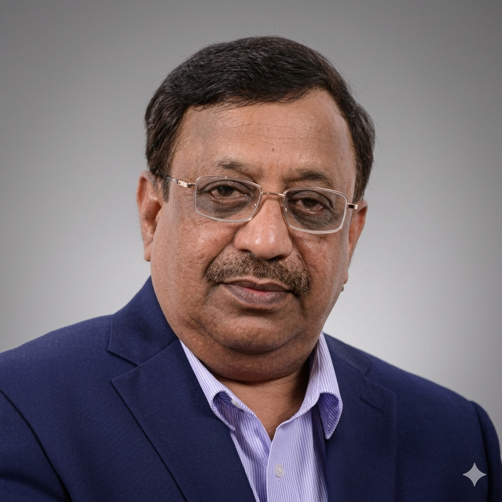
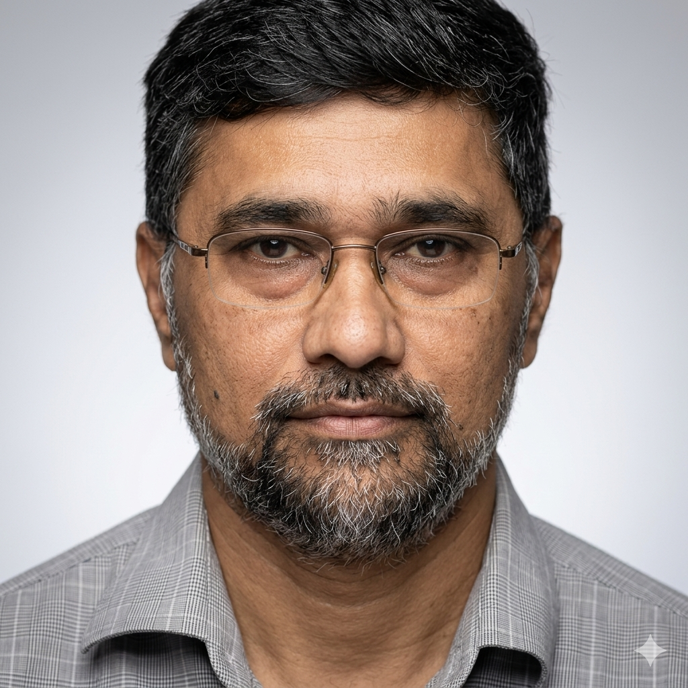
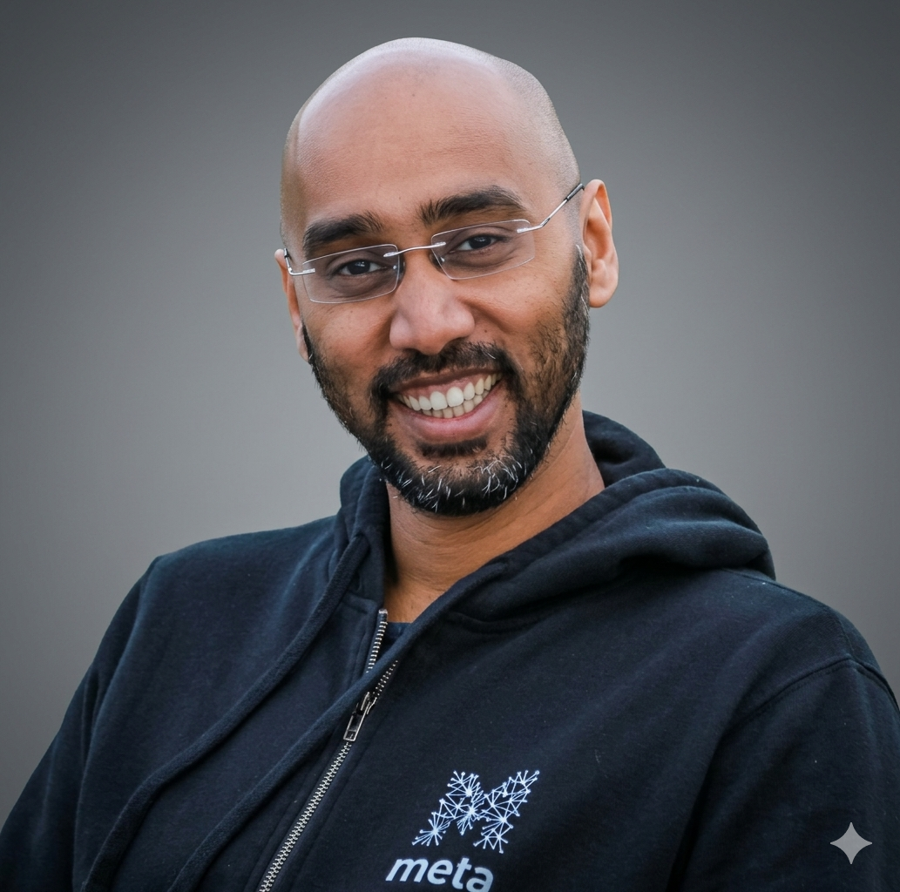
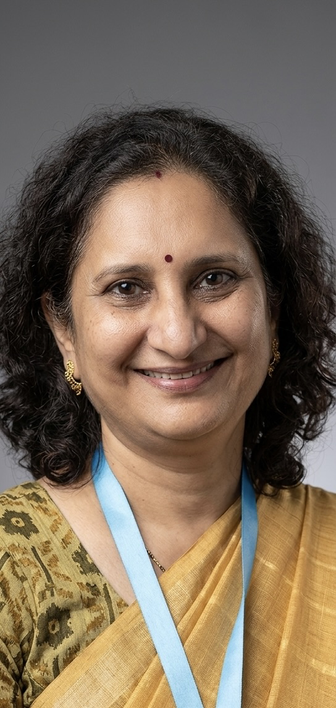

Our Foundation
Special Thanks.
AesCode Co. stands on the foundations of clinical excellence and rigorous research. We extend our gratitude to the leadership whose mentorship and institutional support have guided our technical evolution.
Dr. (Brig) S.P. Gorthi
Dr. (Brig) Sankar Prasad Gorthi is a distinguished neurologist with over four decades of experience in medicine. A graduate of the All India Institute of Medical Sciences (AIIMS), he commissioned into the Army Medical Corps in 1984, serving with distinction before retiring in 2016 as a Brigadier and Professor & Head of the Department of Neurology at Army Hospital R&R, Delhi. Following his retirement, he served as Professor and Head of Neurology at Kasturba Medical College, Manipal, and since January 2020 has been leading the Department of Neurology at Bharati Vidyapeeth Hospital, Pune.
He further enriched his expertise through observerships in Movement Disorders at the National Hospital for Neurology and Neurosurgery, Queen Square, London, in 2004 and 2017. Dr. Gorthi's contributions to the field have been widely recognised, with accolades including the ML Soni Award for Best Resident in Neurology at AIIMS, the Best Research Paper Award at the Annual Conference of the Indian Academy of Neurology in 2001, and the prestigious Sardar Patel Award for Excellence in Neurosciences Research — a lifetime achievement honour — in 2014. His clinical and research interests encompass demyelinating disorders, stroke, and movement disorders.

Dr. Raghavendran Lakshminarayan
Dr. Raghavendran Lakshminarayan is an experienced Data Analyst and Bioinformatics Subject Matter Expert currently serving as Operations Lead and Senior Program Officer at the Koita Centre for Digital Health (KCDH), IIT Bombay, with prior affiliations at the Max Planck Institute for Biophysical Chemistry and George-August University Göttingen.
With over a decade of cross-functional research experience, he specialises in applying AI/ML and advanced data science methods to complex healthcare challenges, with expertise spanning cancer and infectious disease biology, protein/DNA sequence and structure analysis, NGS data analytics, and multi-omics data. He is equally adept at healthcare data security, implementing robust solutions encompassing encryption, access controls, and regulatory compliance. A proactive and adaptive professional, Raghavendran is driven by a passion for extracting actionable insights from complex biological datasets to drive innovation and efficiency in the healthcare sector.

Dr. Kshitij Jadhav
Dr. Kshitij Jadhav is an Assistant Professor at the Koita Centre for Digital Health (KCDH), IIT Bombay, and a trained neuroscientist with a unique interdisciplinary profile spanning clinical medicine, neuroscience, and AI/ML. He holds an MBBS and MD in Pharmacology from Mumbai's KEM and Sion Hospital, followed by a Ph.D. in Neuroscience from the University of Lausanne, Switzerland, and a postdoctoral fellowship in Neuroscience from the University of Cambridge, UK.
His research is centred on bringing practical AI/ML solutions to Indian healthcare, with a particular focus on multimodal data integration, high-dimensional data analysis, and data efficiency. Bridging the gap between clinicians and data scientists at KCDH, Dr. Jadhav plays a pivotal role in addressing complex healthcare challenges through interdisciplinary collaboration, leveraging his clinical expertise and neuroscience background to develop novel, data-driven solutions for pressing healthcare problems in India.

Dr. Varsha Vaidya
Dr. Varsha Vaidya is a Professor in the Department of Medicine at Bharati Vidyapeeth, Pune, where she has been serving since 1990. She holds an MBBS and DPH from Grant Medical College, Mumbai (1990), a DNB from the National Board of Examinations (1996), and an MD from Bharati Vidyapeeth Medical College (2013).
With a research focus in Healthcare Sciences and Services, Dr. Vaidya has accumulated 150 total citations with an h-index of 6 and an i-10 index of 4. She has been an active contributor to research and doctoral mentorship, having guided theses on public health topics such as anemia in adolescent girls. Her research projects include serving as Principal Investigator for a study on healthcare access to rural communities via telemedicine, and as Co-Investigator on a UNFPA-funded study on post-partum maternal morbidity in relation to Cesarean sections. She is a life member of both IJPH and IAPSM, and has contributed to community health initiatives, including coordinating an Environmental Awareness Programme across 72 schools during the Commonwealth Youth Games.

We extend our sincere gratitude to
For their invaluable institutional support and partnership in advancing our research mission.